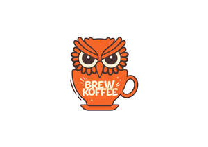

Trade Mark Journal No.2025/040 3 October 2025
UK00004267215 20 September 2025 (30,43)

- Class 30
- Coffee; Coffee drinks; Coffee beverages; Iced coffee; Chocolate coffee; Decaffeinated coffee; Coffee based drinks; Coffee substitutes [artificial coffee or vegetable preparations for use as coffee]; Coffee beverages with milk; Coffee extracts for use as substitutes for coffee; Mixtures of malt coffee with coffee; Flavoured coffee; Coffee beans; Coffee bags; Coffee essences for use as substitutes for coffee; Coffee (Unroasted -); Unroasted coffee; Beverages with coffee base; Beverages with a coffee base; Coffee based beverages; Coffee flavourings; Instant coffee; Beverages made from coffee; Beverages made of coffee; Prepared coffee beverages; Prepared coffee and coffee-based beverages; Drip bag coffee; Coffee capsules; Malt coffee; Caffeine-free coffee; Coffee pods; Freeze-dried coffee; Sugar-coated coffee beans; Mixtures of malt coffee extracts with coffee; Ice beverages with a coffee base; Coffee concentrates; Coffee oils; Extracts of coffee for use as flavours in beverages; Coffee flavorings; Substitutes (Coffee -); Coffee substitutes; Aerated drinks [with coffee, cocoa or chocolate base]; Unroasted coffee beans; Ground coffee; Coffee essence; Roasted coffee beans; Coffee extracts; Coffee in whole-bean form; Tea beverages; Cappuccino; Aerated beverages [with coffee, cocoa or chocolate base]; Chai tea; Ground coffee beans; Tea beverages with milk; Flavourings of tea for food or beverages; Coffee essences; Iced tea; Tea (Iced -); Beverages based on coffee; Tea; Coffee in brewed form; Mixtures of coffee; Coffee mixtures; Chicory for use as substitutes for coffee; Espresso; Powdered coffee in drip bags; Extracts of coffee for use as flavours in foodstuffs; Mixtures of coffee essences and coffee extracts; Chicory [coffee substitute]; Preparations for making beverages [coffee based]; Chocolate bark containing ground coffee beans; Coffee, teas and cocoa and substitutes therefor; Beverages made of tea.
- Class 43
- Coffee shops; Takeaway food and drink services; Take-away food and drink services; Takeaway food services; Serving food and drink in doughnut shops; Coffee shop services; Take-away restaurant services; Take-away food services; Providing food and drink in doughnut shops; Coffee bar services; Takeaway services; Serving food and drink in Internet cafes; Take-away fast food services; Providing food and drink in Internet cafes; Leasing of coffee makers.
Prabu Serumadar